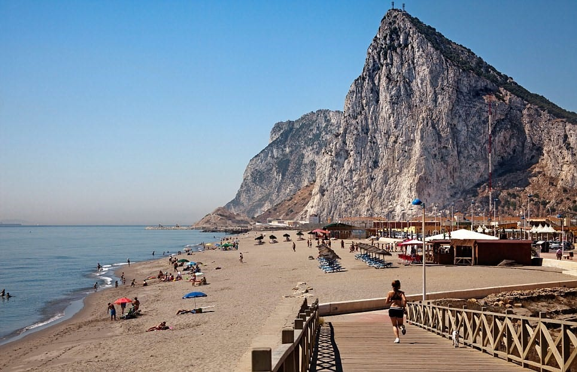

My Favourite Places

Benalmadena – Costa Del Sol, Spain: - I love this place I have been 3 times & It’s my favourite holiday destination in the country. The Marina is so relaxing to walk around, and I recommend the Dolphin swimming. I love Golf as well and there are many beautiful golf courses to play on. And of course, the restaurants, cafés and bars are excellent.

Naples – Italy: – I love Naples because the People are friendly, the birthplace of Pizza, the view of the Amalfi Coast is amazing & the tiny streets filled with cafes and restaurants are to die for.

Nice – France: - I love the atmosphere of Nice, Located on the French Riviera it’s a European paradise. Lovely scenery, Views of Monaco are stunning with all the big yachts. The number of Restaurants, bars and clubs it really has everything for everyone.

Paris – France: - Probably the best capital city in the world. The Café’s, shops, Restaurants & attractions such as the Eiffel Tower, Louvre Museum, Arc De Truimphe, Notre Damme Cathedral & Tuileries Gardens make it the romantic getaway you truly need.
Gibraltar- Port of Spain: - This tiny resort at the bottom of Spain is a lovely British colony. A place that is stunningly beautiful with the Rock of Gibraltar, The Long beach, The tiny monkeys, The restaurants, Bars & hotels are amazing. The views of Morocco from the top of the rock are incredible. The cable car journey to the top is thrilling.